Trajectory Forcing reframes image generation as a structured coarse-to-fine process. Instead of treating intermediate states as hidden computation, it organizes generation into semantic stages that can be decoded, inspected, and edited along the way. Starting from global layout and progressing through parts and subparts to fine detail, the model exposes the generative trajectory as a controllable object rather than a black box.
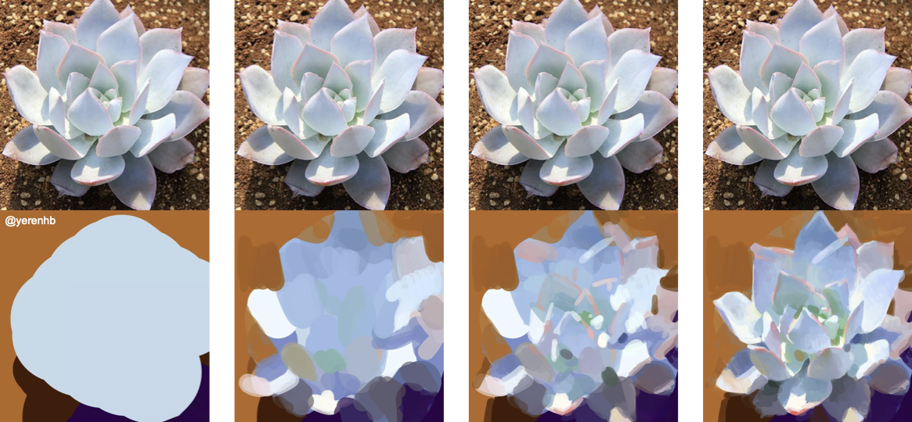
Artistic training and generative modeling. Human visual artists typically adopt a coarse-to-fine workflow, first establishing global structure and dominant color relationships before refining local details, as illustrated in the Figure above (Images courtesy of @yerenhb). Across artistic training practices, beginners are repeatedly advised to avoid chasing details and instead focus on structural abstraction and global coherence. The recurrence of this principle across instructors and contexts suggests that it reflects a stable cognitive regularity: global organization precedes and constrains local articulation.
Motivated by this observation, we incorporate this structural prior into our model design, translating the coarse-to-fine principle into a hierarchical generation framework where global consistency guides detail refinement.
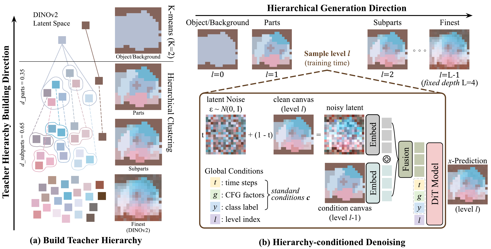
Trajectory Forcing pipeline. Given an input image, we extract DINOv2 features and construct a teacher hierarchy via unsupervised clustering, producing level canvases from fine (original features, ℓ = L-1) to coarse (object/background, ℓ = 0). A single shared network is trained across all levels: at each training step a level ℓ is sampled, and the network denoises the current-level canvas z(ℓ)(t) conditioned on the previous-level canvas z(ℓ-1). At inference, the direction reverses: generation proceeds sequentially from coarse to fine. ⊕ denotes channel-wise concatenation.
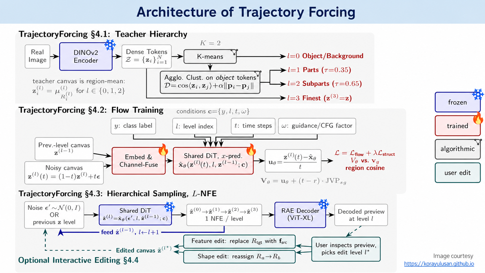
Image courtesy korayulusan.github.ioTeacher hierarchies built from real images by clustering DINOv2 features into a coarse-to-fine stack: object/background, parts, subparts, then the finest tokens. The slider sweeps from the coarse object/background level toward fine detail; drag to reveal the original image.
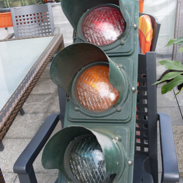
Generated samples decoded at every level of the coarse-to-fine trajectory. The slider sweeps from the model's coarse first level toward fine detail; drag to reveal the final image.
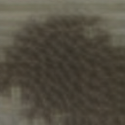
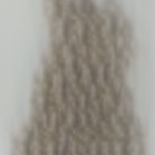
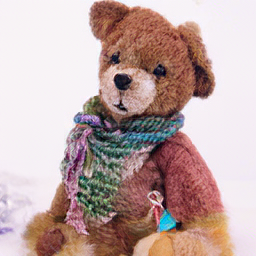
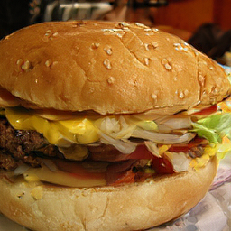
The same samples viewed as the generation unfolds: each slider shows the generated latent (left, PCA-colored) beside its RAE decoding (right). Both sides sweep together from the coarse first level toward fine detail; drag to compare the latent structure with its decoded image at each level.
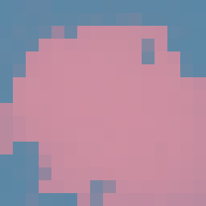
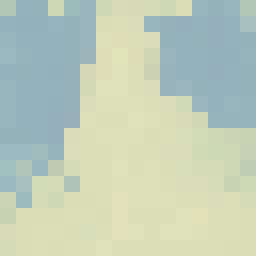
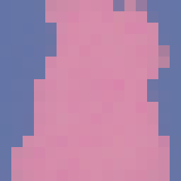
Scroll or pinch to zoom Drag to pan Press Esc to close
@Inproceedings{kocabas2026trajectoryforcing,
author = {Kocabas, Merve and Gao, Gege and Schölkopf, Bernhard and Geiger, Andreas},
title = {Trajectory Forcing: Structure-First Generation with Controllable Semantic Trajectories},
booktitle = {Proceedings of the European Conference on Computer Vision (ECCV)},
year = {2026},
}